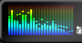

■ スペクトルアナライザー
萌衣☆Player には、下図のようなスペクトルアナライザーが搭載されています。スペクトルアナライザーとは、音声のスペクトル、つまり周波数帯ごとのエネルギー分布を分析して視覚的に表示するものです。
再生している音声ファイルのサンプリング周波数によってレンジが変化するのですが、44.1 kHz の場合、縦の1つのラインが、丁度ピアノの鍵盤の2つ分程度に相当します。1つ隣のラインまでは、おおよそ白鍵3つ分の距離です。
右端がおおよそ 20 kHz の列で、中央辺りが 2 kHz、中央部と左端との中央が 1 kHz になります。
ピアノなどのメロディを奏でる大半の楽器は、中央部分から左側にピークが出現すると思います（ピッコロなどの音域の高い楽器は中央より右側に現れることもありますが）。
シンバルや小太鼓などは右端のほうにピークが出現します。
ピアノや木管楽器などのソロパートなどはメロディが視覚的に見えやすいので、いろいろ観察してみると面白いかもしれません。
Copyright (C) 2002 Leshade Entis, Entis-soft.
All rights reserved.